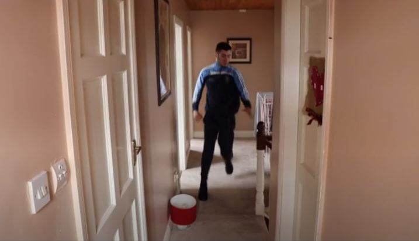

Video Production
School Video


I created a video of a parent waking their child up to go to school. In this video, a teenager is sleeping peacefully and is woken up by their parent. The two bicker about waking up for school on time. The parent leaves for work having been assured by the teenager that they will get to school on time. The teenager then falls back to sleep as soon as the parent leaves and sleeps right through the day. They wake up when they hear the parent returning form work. To cover up that they never got out of bed or even went to school, they get dressed, then go into the back of the house thinking they have gotten away with it, only to find the parent in the kitchen holding the teenager’s schoolbag.